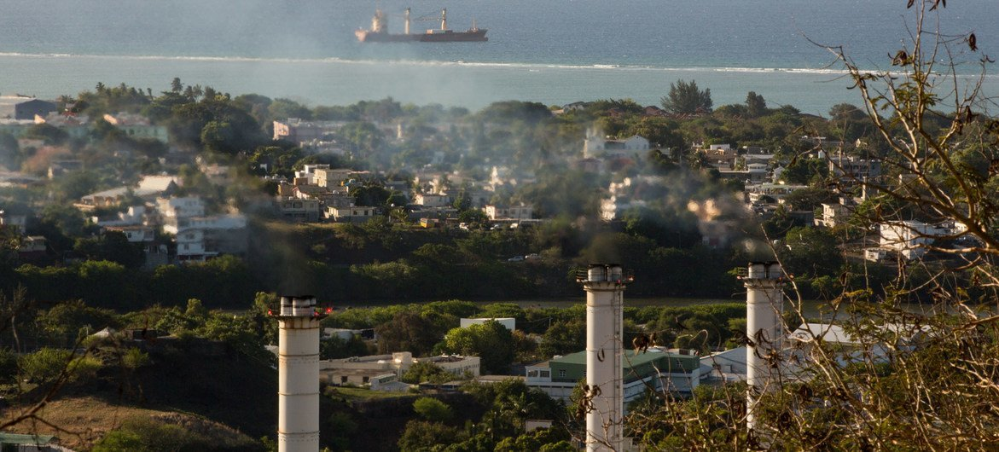
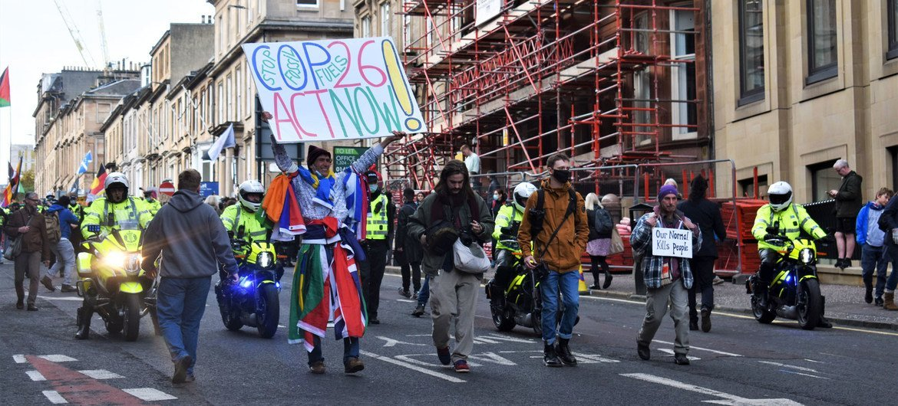
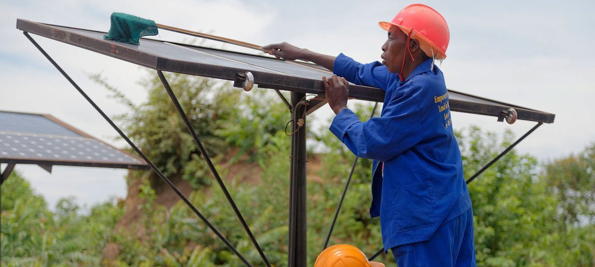
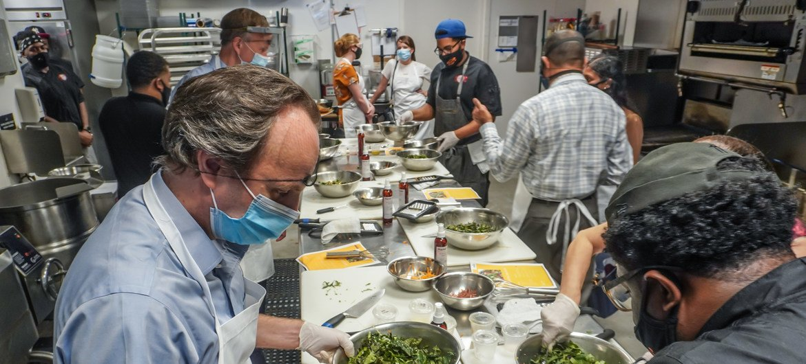
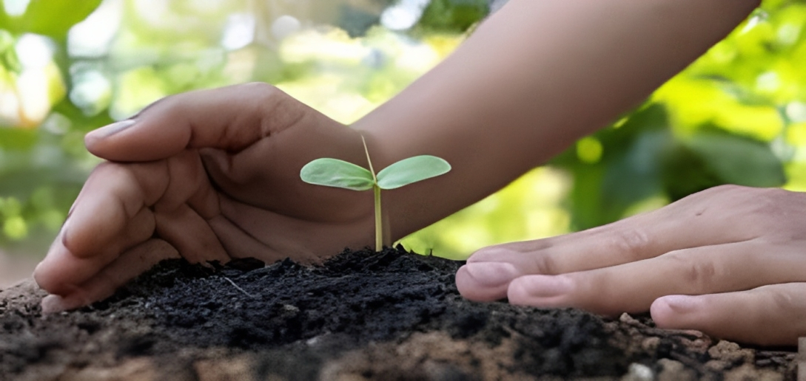

الصفحة الرئيسية
الصفحة الرئيسية
الموضوعات
عن بيئتنا

أنه مع ارتفاع درجة حرارة الأرض بمقدار درجتين مئويتين، سيصاحب ذلك المزيد من موجات الجفاف الشديدة والفيضانات المدمرة وحرائق الغابات والعواصف. ومثلما قال الأمين العام للأمم المتحدة، أنطونيو غوتيريش، في مؤتمر الأمم المتحدة الأخير المعني بتغير المناخ (COP26)، فإن "كوكبنا الهش على شفير الهلاك. لا نزال نقترب من كارثة مناخية. حان الوقت لإعلان حالة الطوارئ - أو أن فرصتنا في الوصول بانبعاثات الكربون إلى الصفر ستكون معدومة". قد تبدو النظرة المستقبلية مثيرة للإحباط. لكن الخبر السار هو أنه لا يزال بإمكاننا القيام بالكثير كأفراد لتغيير هذه السردية. قال نيكلاس هاغيلبيرج، منسق تغير المناخ في برنامج الأمم المتحدة للبيئة*: "تتطلب حالة الطوارئ المناخية اتخاذ إجراءات من جانبنا جميعا. نحتاج إلى الوصول بانبعاثات غازات الاحتباس الحراري إلى مستوى الصفر بحلول عام 2050، ولكل شخص منا دور يلعبه. كأفراد يتعين علينا أن نغير عاداتنا الاستهلاكية والضغط على أولئك الذين يمثلوننا - أرباب عملنا وسياسيونا - للانتقال بسرعة إلى عالم منخفض الكربون."
شجعوا أصدقاءكم وعائلاتكم وزملاءكم في العمل على تقليل التلوث الكربوني. انضموا إلى حركة Count Us In عالمية مثل "كاونت أس إن" والتي تهدف إلى إلهام مليار شخص لاتخاذ خطوات عملية وتحدي قادتهم للعمل بجرأة أكبر بشأن المناخ. يقول مؤسسو المنصة إنه إذا اتخذ مليار شخص إجراءات عملية، فيمكنهم تقليل ما يصل إلى 20 في المائة من انبعاثات الكربون العالمية. أو يمكنكم الاشتراك في حملة الأمم المتحدة "اعملوا الآن" بشأن تغير المناخ والاستدامة وإضافة صوتكم إلى هذا النقاش العالمي المهم.
الضغط على السياسيين والشركات المحلية لدعم الجهود المبذولة لخفض الانبعاثات وتقليل التلوث الكربوني. لمفيدة حول كيفية القيام بذلك. قوموا باختيار قضية بيئية " بعض النصائح"كاونت أس إن لدى مبادرة تهتمون بها، وطالبوا بالتغيير الذي تودون رؤيته، ثم حاولوا ترتيب لقاء مع ممثليكم في المكان الذي تعيشون فيه. قد يبدو الأمر مخيفا لكن صوتكم يستحق أن يُسمع. إذا أريد للإنسانية أن تنجح في معالجة حالة الطوارئ المناخية، يجب أن يكون القادة السياسيون جزءا من الحل. الأمر متروك لنا جميعا لمواكبة الضغط
يعتبر قطاع النقل مسؤولا عن حوالي ربع انبعاثات غازات الاحتباس الاحراري تقوم العديد من الحكومات، في جميع أنحاء العالم، بتنفيذ سياسات لإزالة الكربون من وسائل النقلأنتم أيضا يمكنكم المساهمة في ذلك: اتركوا سياراتكم في المنزل وامشوا أو اركبوا الدراجات الهوائية كلما أمكن ذلك. إذا كانت المسافات بعيدة، فعليكم استخدام وسائل النقل العام، ويفضل أن تكون الوسائل العاملة بالكهرباء. إذا كان لا بد من القيادة، فاقترحوا مشاركة السيارات مع آخرين بحيث يتم تقليل عدد المركبات على الطريق العام. وإذا كان بالإمكان، فقوموا بشراء سيارات كهربائية. قللوا من عدد الرحلات الطويلة التي تقومون بها.
إذا استطعتم، قوموا باستبدال مزود الطاقة إلى مزود خال من الكربون أو يعمل بالطاقة المتجددة. قوموا بتركيب الألواح الشمسية على أسطح منازلكم. كونوا أكثر فاعلية: اخفضوا التدفئة بدرجة أو درجتين، إن أمكن. أوقفوا تشغيل الأجهزة والأضواء، في حال عدم استخدامها، ومن الأفضل شراء المنتجات الأكثر كفاءة في المقام الأول. استخدموا عازلا للسقف بحيث يكون المنزل أكثر دفئا في الشتاء، وأكثر برودة في الصيف، وسيسهم ذلك في توفير بعض المال أيضا.
تناولوا المزيد من الوجبات النباتية - ستشكركم أجسامكم وسيشكركم كذلك كوكب الأرض. اليوم، يتم استخدام حوالي 60 في المائة من الأراضي الزراعية في العالم لرعي الماشية ويستهلك الناس في العديد من البلدان أغذية من مصادر حيوانية أكثر مما هو صحي. يمكن أن تساعد النظم الغذائية الغنية بالمنتجات النباتية في تقليل الأمراض المزمنة، مثل أمراض القلب والسكتة الدماغية والسكري والسرطان
تقليل البصمة الكربونية في طعامكم قوموا بشراء الأطعمة المحلية والموسمية سيساعد ذلك الشركات الصغيرة والمزارع في منطقتكم وسيسهم في تقليل انبعاثات الوقود الأحفوري المرتبطة بالنقل وتخزين سلسلة التبريد. تستخدم الزراعة المستدامة طاقة أقل بنسبة تصل إلى 56 في المائة، وتنتج انبعاثات أقل بنسبة 64 في المائة وتسمح بمستويات أكبر من التنوع البيولوجي مقارنة بالزراعة التقليدية. يمكنكم فعل أكثر من تستخدم الزراعة المستدامة طاقة أقل بنسبة تصل إلى 56 في المائة، وتنتج انبعاثات أقل بنسبة 64 في المائة وتسمح بمستويات أكبر من التنوع البيولوجي مقارنة بالزراعة التقليدية. يمكنكم فعل أكثر من ذلك من خلال زراعة الفاكهة والخضروات والأعشاب بأنفسكم. يمكنكم زرعها في حدائقكم أو في شرفة منازلكم. قوموا بإعداد حديقة مجتمعية في منطقتكم بغرض إشراك الآخرين.
يتم فقدان أو هدر ثلث الطعام المنتج وفقا لتقريرمؤشر نفايات الأغذية لبرنامج الأمم المتحدة للبيئة لعام 2021 يهدر الناس، على مستوى العالم، مليار طن من الطعام سنويا، وهو ما يمثل حوالي 8-10 في المائة من انبعاثات غازات الاحتباس الحراري العالمية. تجنبوا الهدر بشراء ما تحتاجونه فقط. استفيدوا من كل جزء صالح للأكل من الأطعمة التي تشترونها. قوموا بقياس أحجام حصص الأرز والسلع الأساسية الأخرى قبل طهيها، وخزنوا الطعام بشكل صحيح (استخدموا ثلاجة المجمد أو الفريزر إذا كانت لديكم واحدة)، وكونوا مبدعين في التعامل مع بقايا الطعام، وشاركوا ما يزيد عن حاجتكم مع الأصدقاء والجيران، تبنوا مشروعا محليا لمشاركة الطعام. استخدموا المخلفات غير الصالحة للأكل في صناعة السماد لتخصيب حدائقكم. يعتبر التسميد أحد أفضل الخيارات لإدارة النفايات العضوية مع تقليل الآثار البيئية أيضا.
تمثل صناعة الأزياء ما بين 8 إلى 10 بالمائة من انبعاثات الكربون العالمية أكثر من جميع الرحلات الجوية الدولية والشحن البحري مجتمعين -وقد خلقت "الموضة السريعة" ثقافة التخلص من الملابس التي ينتهي بها الحال، سريعا، إلى مكبات النفايات. لكن يمكننا تغيير هذا النمط من السلوك من خلال شراء عدد أقل من الملابس الجديدة وارتدائها لفترة أطول. ابحثوا عن المنتجات المستدامة واستعينوا بخدمات التأجير للمناسبات الخاصة بدلا من شراء ملابس جديدة سيتم ارتداؤها لمرة واحدة فقط. قوموا بإعادة تدوير الملابس التي تحبونها وإصلاحها عند الضرورة
في كل عام يتم تدمير 12 مليون هكتار من الغابات وتعد إزالة الغابات، إلى جانب الزراعة والتغيرات الأخرى في استخدام الأراضي، مسؤولة عما يقرب من 25 في المائة من انبعاثات غازات الاحتباس الحراري العالمية. يمكننا جميعا أن نلعب دورا في عكس هذا الاتجاه من خلال زراعة الأشجار، إما بشكل فردي أو كجزء من مجموعة. على سبيل المثال، تسمح مبادرة " ازرعوا من أجل كوكب الأرض" للناس برعاية غرس الأشجار في جميع أنحاء العالم.
يمكن للأفراد أيضا تحفيز التغيير من خلال مدخراتهم واستثماراتهم عن طريق اختيار المؤسسات المالية التي لا تستثمر في الصناعات الملوثة للكربون ويرسل ذلك إشارة واضحة إلى السوق. وهناك العديد من المؤسسات المالية تقدم بالفعل المزيد من الاستثمارات الأخلاقية، مما يسمح لكم باستخدام أموالكم لدعم القضايا التي تؤمنون بها وتجنب تلك التي لا تؤمنون بها. يمكنكم الاستفسار من مؤسساتكم المالية عن سياساتها المصرفية.